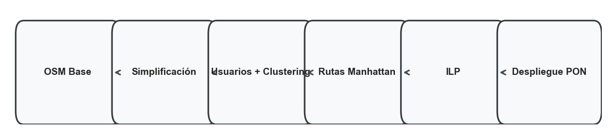

Explora cada etapa del flujo: desde la extracción OSM hasta el despliegue optimizado.
Vista inicial sin simplificar del área urbana seleccionada, conservando la topología vial original para referencia.
Tras la simplificación con OSMnx se obtiene el grafo dirigido utilizable por el pipeline de optimización.
Usuarios sintéticos agrupados por K-Means y posición de splitters sobre nodos reales de la red.
Subset de rutas Manhattan calculadas entre usuarios y sus splitters, previo al filtrado por Power Budget.

Resumen visual de las decisiones binaria del ILP: asignaciones, activación de aristas y despliegue final.
Resultado consolidado del pipeline original con splitters activados, fibras seleccionadas y usuarios cubiertos.